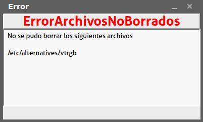
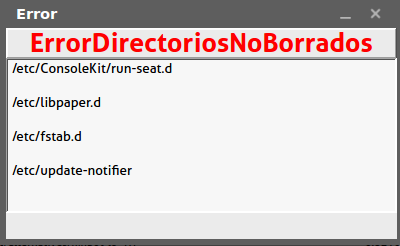

|
Durante las búsquedas la aplicación puede hacer reporte de errores, estos pueden ser: |
|
ErrorArchivosNoBorrados: Aparece cuando se trata de borrar algún archivo y no se puede. |
|  |
|
ErrorDirectoriosNoBorrados: Aparece cuando se trata de borrar algún directorio y no se puede. |
|  |
|
La causa de estos errores puede variar, en general es por causa de que no tiene los permisos para hacerlo, que el archivo esta siendo utilizado, o que no existe. |